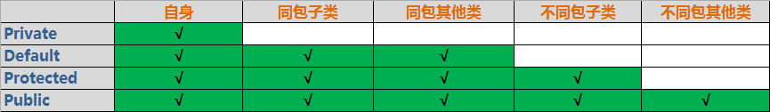

private 私有的
package/friendly/default/不写 默认访问权限
protected 受保护的
public 公共的
自身 : 指的是自己
同包子类 : 子类 , 并且处于同一个包下
同包其他类 : 没有继承关系 , 但是处于同一个包下
不同包子类 : 子类 , 但是在另一个包下
不同包其他类 : 没有继承关系 , 并且在另一个包下
private : 访问权限仅限于类的内部 , 是一种封装的体现 , 例如 , 大多数成员变量都是修饰符为 private 的 , 它们不希望被其他任何外部的类访问 ;
default : 有时候也称为 friendly , 它是针对本包访问而设计的 , 任何处于本包下的类 , 接口 , 异常等 , 都可以相互访问 , 即使是父类没有用 protected 修饰的成员也可以 ;
protected : 主要的作用就是用来保护子类的 ; 它的含义在于子类可以用它修饰的成员 , 其他的不可以 , 它相当于传递给子类的一种继承的东西 ;
public : 具有最大的访问权限 , 可以访问任何一个在classpath下的类 , 接口 , 异常等 ; 它往往用于对外的情况 , 也就是对象或类对外的一种接口的形式 ;
